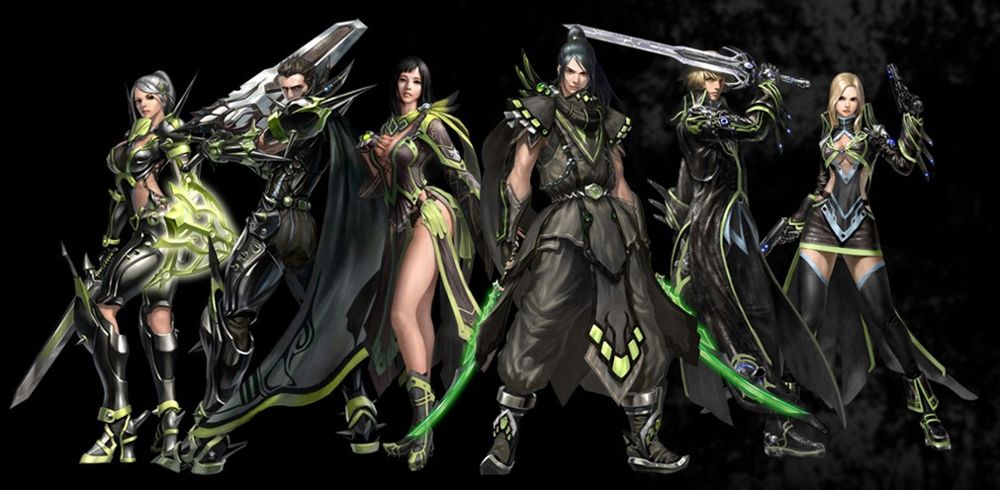

Cabal, o jogo que se tornou mais do que apenas uma experiência, mas sim um elo formador de laços que permanecem até hoje. Quando me vi mergulhando naquele universo virtual por longos períodos, mal sabia que seria o ponto de partida para uma jornada repleta de aventuras e amizades duradouras.
Cabal não foi o primeiro jogo que joguei, mas foi o jogo que ocupou meu tempo e atenção por um longo período. Cada batalha travada, cada missão cumprida e cada desafio superado contribuíram para moldar não apenas minha experiência de jogo, mas também os laços que construí com os amigos que hoje fazem parte da minha vida.
Enquanto explorava aquele reino digital, mergulhei em batalhas épicas, alianças estratégicas e uma comunidade vibrante de jogadores. Foi nesse contexto que conheci pessoas incríveis, compartilhando risadas, estratégias e desafios enquanto explorávamos os confins do jogo.
Amigos
Ao longo do tempo, o que começou como uma simples conexão em um jogo se transformou em amizades verdadeiras e duradouras fora do mundo virtual. Através do Cabal, fortaleci os laços com amigos que hoje são parte essencial da minha jornada pessoal, dividindo não apenas aventuras digitais, mas também experiências da vida real.
Cabal não foi apenas um jogo; foi o catalisador para o florescimento de laços significativos, um lugar onde as amizades se fortaleceram e cresceram para além do mundo virtual. Essa experiência moldou não apenas minha jornada no jogo, mas também os relacionamentos que permanecem como pilares sólidos na minha vida.